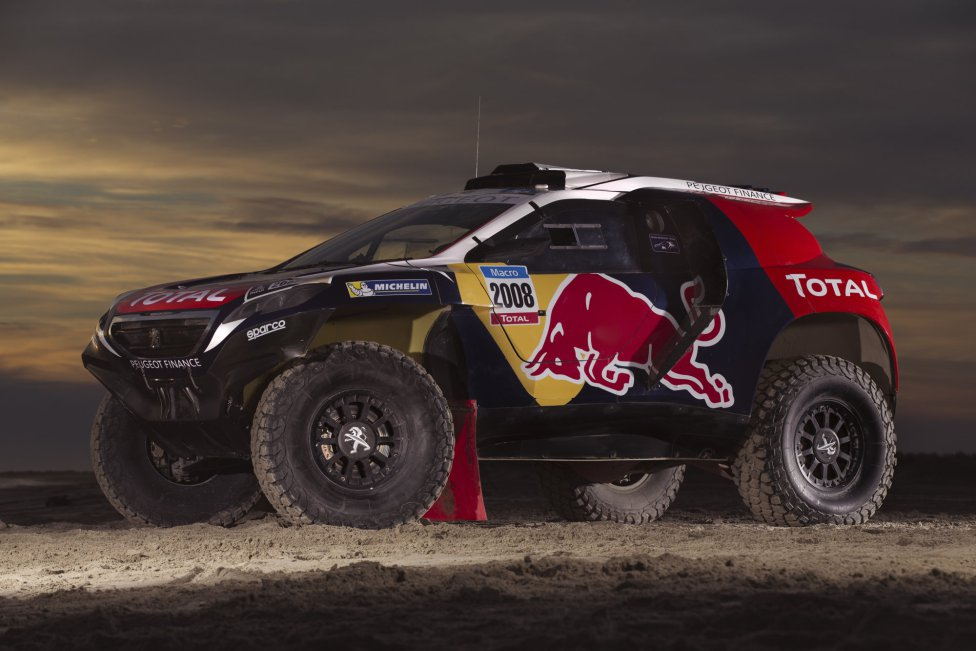

CARLOS SAINZ
El mejor piloto español del dakar
Puedes pinchar aqui para ver el enlace en Wikipedia

Es considerado el mejor piloto español de rally de la historia4 y el mejor piloto del campeonato mundial en el momento de su retirada.5A 1 Fue una persona querida y admirada por su carisma y elegido siempre por los periodistas para conocer su opinión la cual era bien considerada.6 Su éxito se debía a su buena condición física a su actitud deportiva y profesional y a su gran espíritu competitivo. Además era conocido por su gran talento para preparar y evolucionar coches de rally.7 Era conocido en el Mundial de Rallyes con el apodo de El Matador, por su fuerte personalidad1 y como El Rey entre los medios de comunicación españoles.8
- resumen
Durante años fue el piloto que más puntos acumulaba en el histórico del Campeonato Mundial de Rally (1242); actualmente es segundo por detrás de Sébastien Loeb.9 Es el que más pruebas del mundial ha disputado (196),10 el tercero que más victorias tiene (26),11 tras Sébastien Loeb (78) y Marcus Grönholm (30), el segundo piloto que más podios ha conseguido (97).12 Es el segundo piloto que ha ganado mayor número de rallyes diferentes a lo largo de la historia (13) y el tercero con más número de scratchs o tramos ganados (756). Fue el primer piloto no nórdico en ganar el Rally de los 1000 Lagos, en Finlandia, cosa que no había ocurrido en los 40 años de existencia de dicha prueba. Entre sus victorias se cuentan tres en el Rally de Montecarlo, tres en el Rally Acrópolis y una en el Rally Safari. Junto a Chus Puras y Dani Sordo, es uno de los tres pilotos españoles que ha ganado algún rally en el Campeonato Mundial de Rally.13 Por otra parte, ha disputado nueve ediciones del Rally Dakar, finalizando primero en el 2010 y tercero en 2011, acumulando 29 victorias de etapa.
- Inicios como piloto
En 1980 y con dieciocho años recién cumplidos Sainz con el Renault 5 Ts que le había comprado su padre, se marcó el objetivo de participar en su primera carrera de rallyes y que sería el Rally Shalymar que se celebraba en el mes de diciembre de ese mismo año. A pesar de que uno estudiaba derecho y el otro era director de marketing de una cadena hostelera, se las buscaron para encontrar el tiempo y el dinero para preparar el coche. Sus familias tampoco los ayudaron económicamente hablando y tuvieron que ceñirse a lo básico. Al R5 le instalaron unas barras antivuelco de segunda mano, los cinturones de seguridad, amortiguadores y frenos. El Shalymar, una prueba importante en la época, se disputaba cerca de casa de Sainz y Lacalle y de la que pudieron aprovechar las notas que Oñoro tenía de haber participado en ediciones anteriores. Con el dorsal número 78 en el vehículo, Sainz se estrenó en un rally frío con temperaturas bajo cero y decidieron alternarse al volante, algo que siguieron haciendo durante las siguientes carreras, por lo que ambos ejercieron de piloto y copiloto.22En la prueba finalizaron 23 y segundos de Grupo 1 y una de las cosas que a Juanjo Lacalle le llamó la atención fue la forma de trazar que tenía Carlos, sin cometer errores, algo inusual puesto que era su primera carrera.23
-
Condecoraciones y reconocimientos
Badge of the Royal Order of Sports Merit (Spain).svg Medalla de Oro de la Real Orden del Mérito Deportivo, otorgada por el Consejo Superior de Deportes (1994)153
En 1997 recibió la Orden Olímpica otorgada por el Comité Olímpico Español.154
El 30 de noviembre de 2001 fue condecorado con la Gran Cruz de la Real Orden del Mérito Deportivo otorgado por el Ministerio de Educación, Cultura y Deporte.155 También en 2001 recibió la Medalla de oro al mérito deportivo otorgada por el Ayuntamiento de Madrid.154
En 2004, durante el Rally Cataluña, fue considerado por pilotos, copilotos y directores de los equipos oficiales, como el mejor piloto de rallyes de todos los tiempos.154
En 2008 recibió la Medalla de la juventud y el deporte otorgada por el Gobierno de Francia.154
En 2012 Sainz fue incluido en el Salón de la Fama de los Rallys (Rally Hall of Fame) en el Museo Mobilia del transporte de Finlandia, situado en la ciudad de Kangasala, y recidió el homenaje durante la celebración del Rally de Finlandia disputado del 2 al 4 de agosto.156
